We present a method for improving segmentation tasks on images affected by adherent rain drops and streaks. We introduce a novel stereo dataset recorded using a system that allows one lens to be affected by real water droplets while keeping the other lens clear. We train a denoising generator using this dataset and show that it is effective at removing the effect of real water droplets, in the context of image reconstruction and road marking segmentation. To further test our de-noising approach, we describe a method of adding computer-generated adherent water droplets and streaks to any images, and use this technique as a proxy to demonstrate the effectiveness of our model in the context of general semantic segmentation. We benchmark our results using the CamVid road marking segmentation dataset, Cityscapes semantic segmentation datasets and our own real-rain dataset, and show significant improvement on all tasks.
Architecture
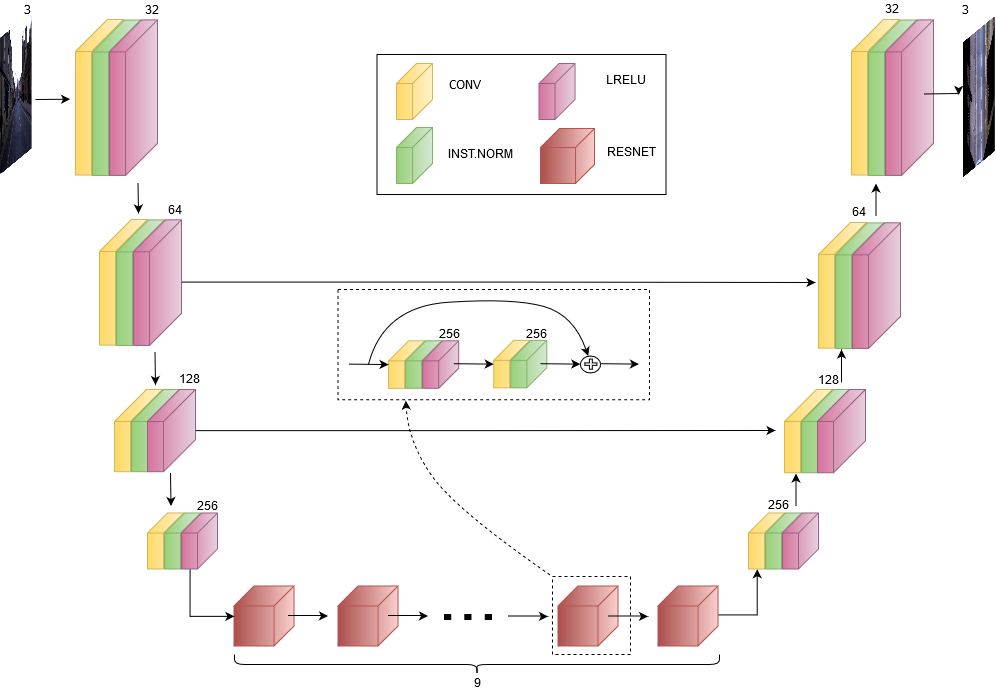
Fig 1. The internal architecture of our generator. We motivate the addition of additive skip connections by observing that much of the structure of the input image should be kept, along with illumination levels and fine details.
Rain-making device
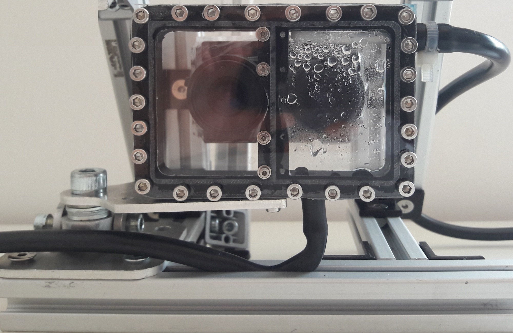
Fig 2. Our small-baseline stereo camera setup. A bi-partite chamber with acrylic clear panels is placed in front of the lenses, with the left-hand section being kept dry at all times, while the right-hand section is sprayed with water droplets using an internal nozzle.
Dataset
Version 1 of the dataset is available at this link!
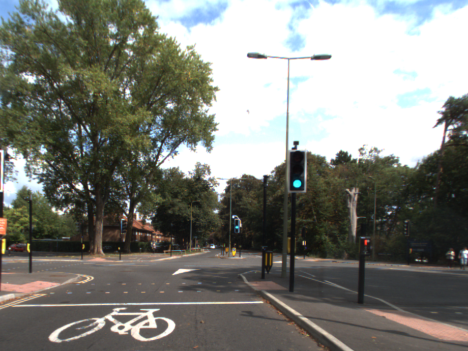
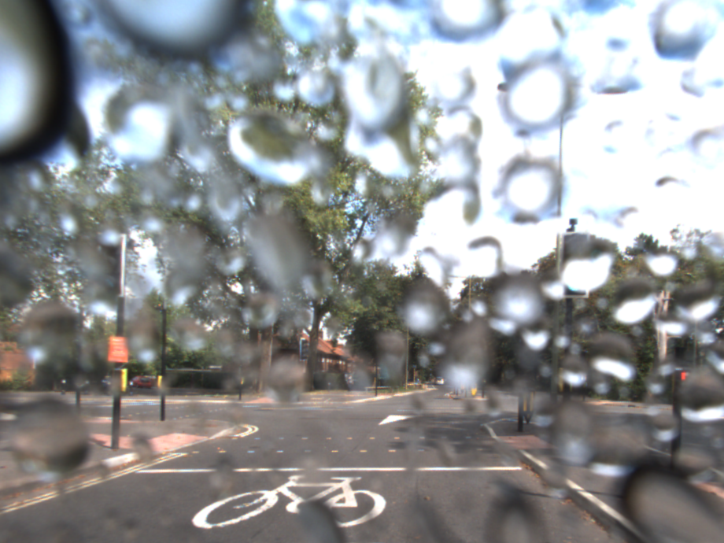
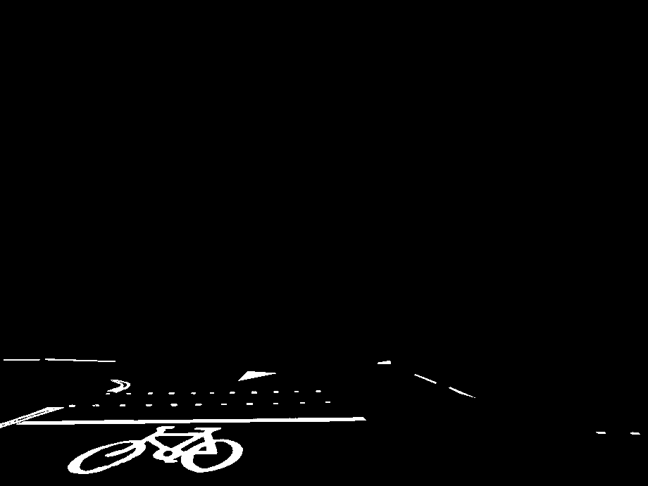
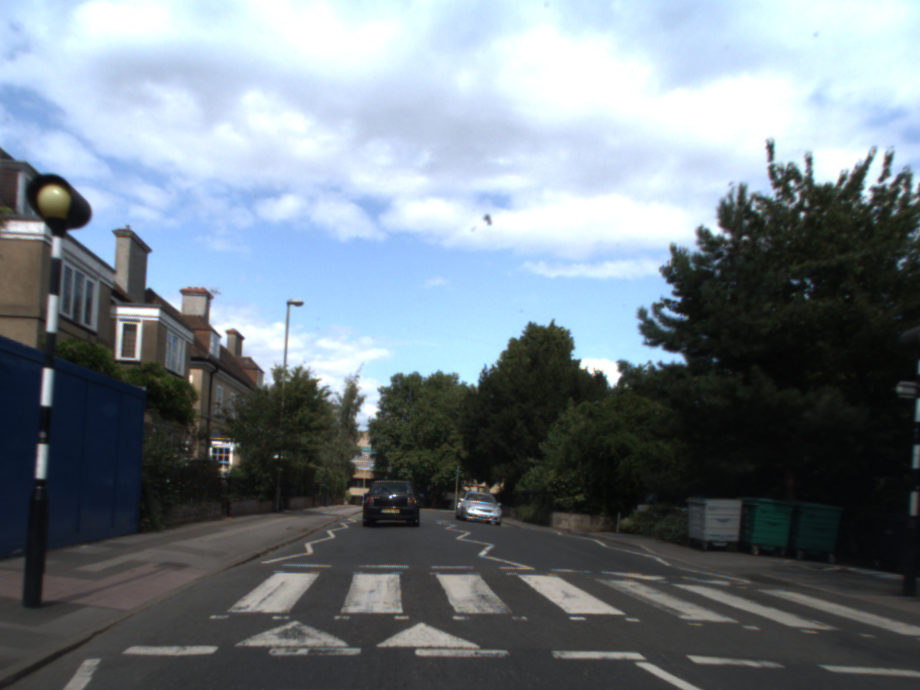
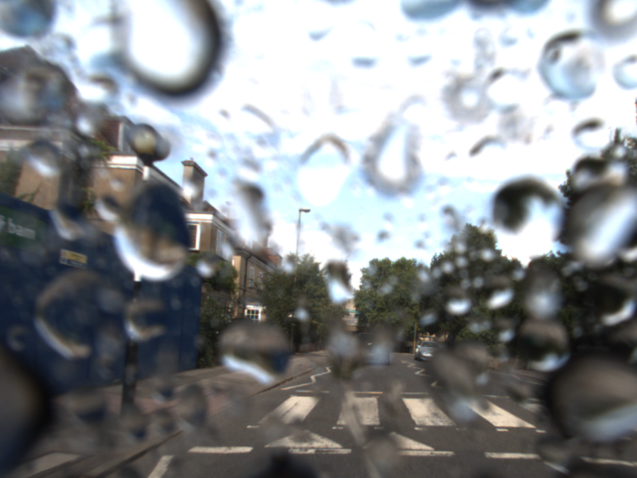
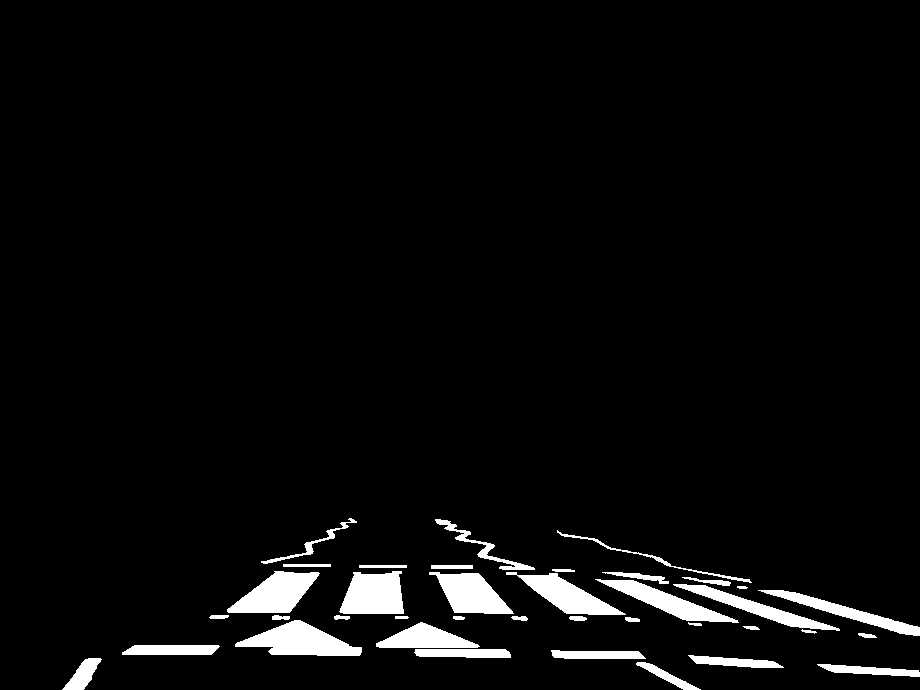
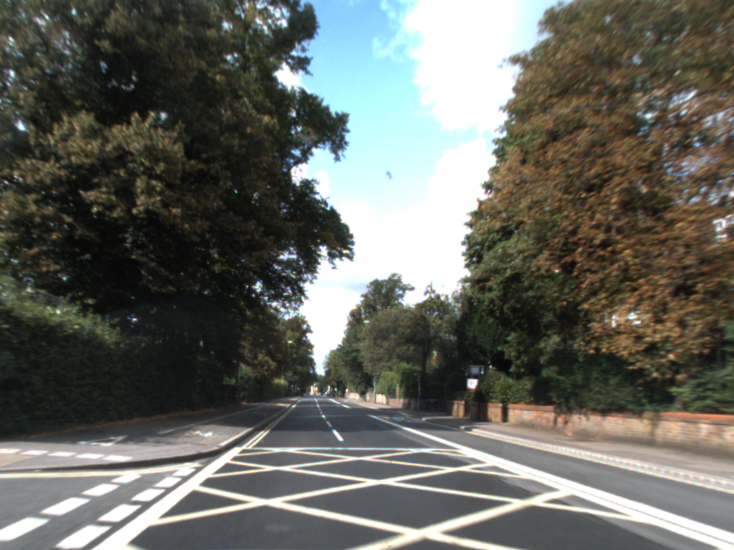
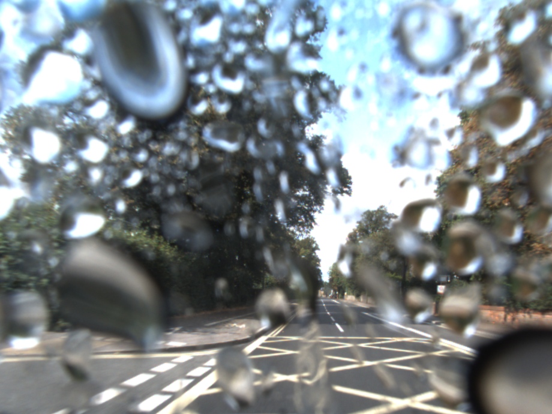
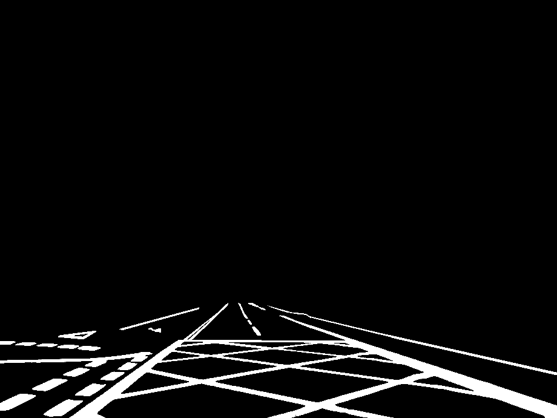
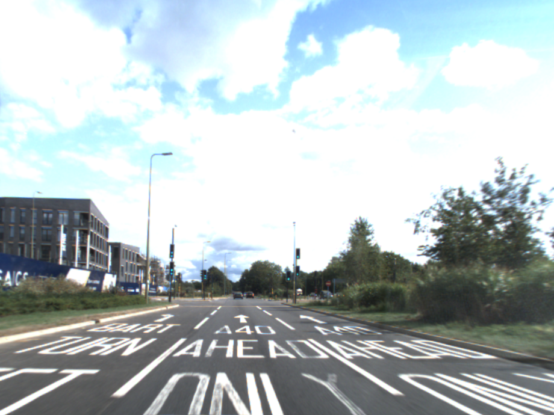
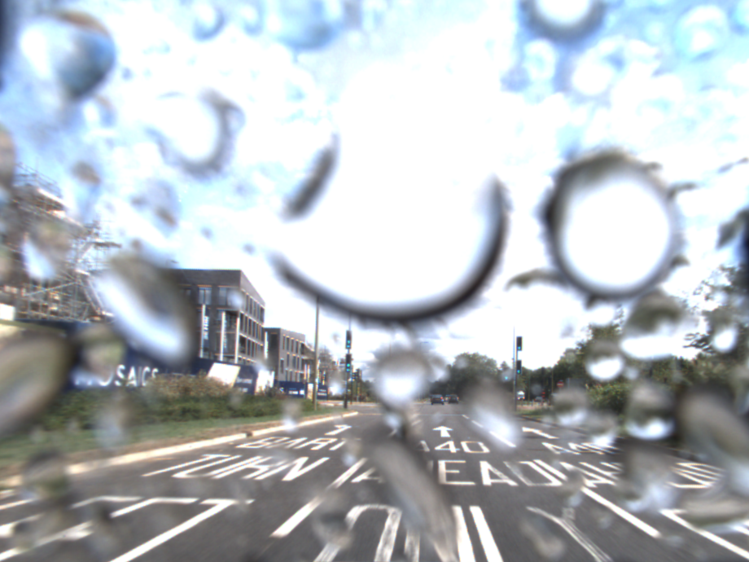
a) Clear
b) Rainy
c) Ground truth
Fig 3. Examples from our dataset.
References
[1] D. Eigen, D. Krishnan, and R. Fergus. Restoring an image taken through a window covered with dirt or rain. In Proceedings of the IEEE International Conference on Computer Vision, pages 633-640, 2013.
[2] P. Isola, J.-Y. Zhu, T. Zhou, and A. A. Efros. Image-to-image translation with conditional adversarial networks. arXiv preprint arXiv:1611.07004, 2016.
[3] S. You, R. T. Tan, R. Kawakami, and K. Ikeuchi. Adherent raindrop detection and removal in video. In Proceedings of the IEEE Conference on Computer Vision and Pattern Recognition, pages 1035-1042, 2013.